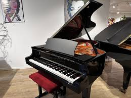

Luister naar een selectie van pianomuziek die gespeeld wordt tijdens optredens en evenementen.
Op deze pagina vindt u een aantal voorbeelden van pianomuziek die ik speel tijdens optredens. De muziek bestaat uit een mix van klassieke stukken, filmmuziek en pianoversies van bekende nummers. Live pianomuziek kan een bijzondere sfeer creëren tijdens momenten zoals een ceremonie, diner of receptie. De stijl van de muziek wordt altijd afgestemd op de sfeer van het evenement.
Dit is het nummer Viva La Vida, een popnummer waar ik mijn eigen cover van heb gemaakt. Dit soort nummers zijn erg sfeervol, en de ze raad ik dank ook zeer aan.
Pianomuziek wordt vaak gebruikt tijdens momenten waarbij een rustige en stijlvolle sfeer gewenst is. Tijdens een diner of receptie kan live muziek een warme achtergrond creëren zonder gesprekken te verstoren.
Bij bruiloften kan pianomuziek juist een emotionele en bijzondere sfeer toevoegen, bijvoorbeeld tijdens de ceremonie of bij speciale momenten van de dag.
Omdat de piano een veelzijdig instrument is, kan de muziek eenvoudig worden aangepast aan de sfeer van het evenement.

Het repertoire bestaat uit verschillende muziekstijlen. Hierdoor kan de muziek worden afgestemd op de sfeer van het moment en het type evenement.
Zo kunnen rustige klassieke pianostukken worden afgewisseld met herkenbare filmmuziek of moderne nummers in pianoversie. Deze combinatie zorgt voor variatie en maakt de muziek toegankelijk voor een breed publiek.
Email: jaeldijk@hotmail.com
Telefoon: +31 6 39749866